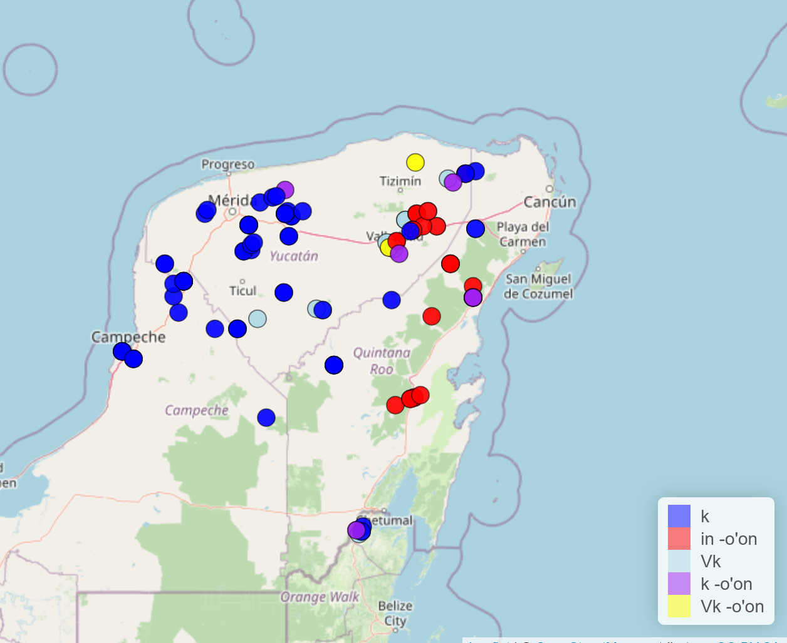

[PDF]
Morphological Variation and Change in Yucatec Maya
This paper investigates morphological variation and change in Yucatec Maya through three person marker variables: the first person singular possessive marker, first person plural possessive marker, and progressive aspect marker fusion with person markers. The apparent-time method is used with data from the Atlas of Yucatec Maya Online to analyze generational differences and examine how social factors influence language variation and change. Results show consistent change across apparent time and are geographically patterned. Population size trends are less conclusive, with rural areas unexpectedly leading innovation in some cases. Instances of innovation are also affected by indigenous speakers and bilingualism. Results reveal complex patterns of morphological change shaped by multiple intersectional social factors.
Introduction
This paper looks at morphological variation and change in Yucatec Maya, spoken by approximately 800,000 people across Mexico’s Yucatán Peninsula (Blaha Pfeiler et al., 2022). Language variation, where multiple interchangeable variants have equivalent meaning, is a driving force behind language change (Crowley & Bowern, 2010, pp. 254–257). Language variation is not random; non-linguistic factors affect how individuals speak and how language is used throughout a society (Millar, 2012). In the absence of historical language data, the apparent-time construct uses generational differences as a proxy for change over time. (Millar, 2012). Language can change via lexical diffusion, with changes propagating throughout the lexicon (Crowley & Bowern, 2010, p. 259). Lexical diffusion is influenced by social factors like geography and class (Crowley & Bowern, 2010, p. 261), with certain social groups leading or resisting change. Using the apparent-time method, this paper examines two hypotheses about morphological variation and change in Yucatec Maya. First, all three morphological variables are undergoing change in apparent time, with innovative forms more frequent among younger speakers and conservative forms more frequent among older speakers. Second, innovative forms will vary geographically and be concentrated in urban centers.
Data comes from the Atlas of Yucatec Maya Online (Blaha Pfeiler et al., 2022), a corpus resource of Yucatec Maya. Three morphological variables are examined: first person singular possessive, first person plural possessive, and progressive aspect marker fusion with person markers. Using the apparent-time method alongside five additional social factors, this paper identifies which social groups are leading or resisting morphological innovations.
Results provide evidence of change in progress across all three variables: conservative forms are more frequent among older speakers while innovative forms are more frequent among younger speakers. The geographic patterns are partially as predicted. Innovative forms do vary geographically. However, contrary to expectations, the innovative ik/ek/ak variant of the first person plural possessive marker is more common in rural areas and the conservative k variant is more common in urban areas. For the other two variables, urban-rural patterns were less conclusive.
Methods and Assumptions
Linguistic variables are language features that have multiple variants with the same meaning but different social or stylistic significance (Labov, 1973, p. 271). This paper examines three morphological variables: the first person singular possessive marker (in vs. i), first person plural possessive marker (k vs. ik/ek/ak vs. in… -o’on), and progressive aspect marker fusion with person markers (táan in vs. tíin/tin/ti). Conservative variants represent older patterns while innovative variants represent newer patterns. This paper classifies variants as conservative or innovative based on their frequency across generations: forms more common among older speakers are conservative, while forms more common among younger speakers are innovative.
Data was obtained from the Atlas of Yucatec Maya Online (Blaha Pfeiler et al., 2022), an online corpus of elicitation data (n=108 respondents) collected from towns across the Yucatán Peninsula (n=108 towns). Elicitation covered 48 questions targeting morphological features. The Atlas provides responses and annotations for each morphological question. Statistical analyses were conducted and provided by the Atlas, including per-question (or per-variable) slopes across different social factors (time, space, gender, population size, indigenous speakers, bilingualism). Unless otherwise stated, statistical analysis was performed by the Atlas. Data limitations are addressed in the discussion section.
Six social factors are analyzed: time (approximated by generation as per the apparent-time construct), space (geographical region), gender, population size (dividing respondents into rural and urban), indigenous speakers (percentage of indigenous speakers in a respondent’s area), and bilingualism (approximated by measuring the percent of Spanish words in a respondent’s answers). Although slope values were provided, statistical significance p-values were not provided for space and gender, making results for these social factors more subject to interpretation. For each morphological variable, the Atlas provides frequencies of the annotated conservative and innovative variants and statistical analysis (time-slope across all questions, time-slope per question, effect sizes, and slopes for other social factors per question).
Results and Discussion
Table 1. Yucatec Maya Morphological Variables and Frequencies
| Variable | Conservative Variant | N | % | Innovative Variant | N | % | Total Tokens |
|---|---|---|---|---|---|---|---|
| First person singular possessive marker | in | 95 | 93.08 | i | 7 | 6.92 | 108 |
| First person plural possessive marker | k | 119 | 63.60 | ik/ek/ak or in…-o’on | 68 | 36.40 | 108 |
| Progressive aspect marker fusion with person markers | táan in/táan u (no fusion) | 439 | 29.20 | Fusion forms (tin/tu/ti/túun) | 1062 | 70.80 | 1501 |
Note. Other low-frequency variants excluded from binary classification. First person singular possessive marker frequencies approximate due to low innovative form occurrence and lack of comprehensive annotation.
All three variables provide evidence of change in progress. Based on the apparent-time construct, innovative variants are replacing conservative variants across the board. For the first person singular possessive marker, innovative i appears primarily among younger speakers. The first person singular possessive shows minimal innovation at ~6.92% (Table 1) across all questions, suggesting it is early in the process of change. However, the low frequency of innovative tokens makes it difficult to establish a clear apparent-time trend. For the first person plural possessive marker, conservative k has a negative time slope whereas the innovative in …-o’on has a positive slope, implying it is replacing k. First person plural possessive shows moderate innovation at 36.40% (Table 1), suggesting it is further in the process of change. For progressive aspect marker fusion with person markers, change across apparent-time is even more pronounced, with the conservative no fusion variant decreasing steadily and the innovative fusion variant increasing steadily to replace it. Progressive aspect fusion shows the most innovation at 70.80% (Table 1), suggesting it is at the most advanced stage of change.
Figure 1. Geographic Distribution of First Person Plural Possessive Variants in Yucatec Maya.

Use of innovative variants is geographically patterned as predicted. For example, for the first person plural possessive variable (Figure 1), conservative k is more prominent in the west near Merida and Campeche and innovative in …-o’on is concentrated near Valladolid and some eastern regions. Furthermore, the progressive aspect marker fusion appears to have similar east-west behavior for certain questions. The lack of statistical analysis for this social factor limits quantitative results.
Contrary to the hypothesis, urban centers did not lead innovation for all morphological variables. For the first person singular possessive marker, innovative i tends to be more common in urban areas, but low frequency and lack of comprehensive data annotations makes this result inconclusive. Notably, for the first person plural possessive marker, the innovative ik/ek/ak variant is more common in rural areas (negative slope) while urban centers favor the conservative k variant (positive slope). Progressive aspect marker fusion with person markers showed no significant urban-rural pattern for binary fusion vs. no fusion, but analyzing specific variant forms shows the innovative ti and tu (contraction/reduction of both táan and in/u) is more common in urban areas (positive slope).
Other social factors not covered by the hypotheses also played a role in linguistic variation and change. For the first person plural possessive marker, innovative and analogical in…-o’on is more common in areas with lower indigenous density; conservative k is more common in areas with higher indigenous density. This pattern suggests that less indigenous areas are leading innovation. There are no significant trends in relation to bilingualism (Spanish word bias in answers) which implies the innovation is not due to Spanish influence. For progressive aspect marker fusion with person markers, fusion–especially the maximally reduced ti variant–is more common in areas with high Spanish bias; no fusion (táan in) is more common in areas with low Spanish bias. For the first person singular possessive marker, gender appears to be a factor, with women using the innovative i variant more often than men.
Conclusion
This paper tested whether three morphological variables in Yucatec Maya are undergoing change over apparent time and whether innovations show geographic and urban concentration. The apparent-time hypothesis was strongly supported since all three variables showed innovative forms more frequent among younger speakers and conservative forms more frequent among older speakers. This pattern indicates that Yucatec Maya is undergoing systematic morphological change in person-marking systems.
As predicted, innovative variants show clear geographic patterning, with east-west stratification observed for the first person plural possessive variable and (to an extent) progressive aspect marker fusion. Geographic variation reflects the spatial diffusion of innovations across the peninsula. However, the urban concentration prediction was not fully supported. The progressive aspect marker fusion showed urban concentration of the maximally reduced ti and tu forms, signifying urban-led change. In contrast, the first person plural possessive marker showed the opposite pattern: urban centers favored conservative k while rural areas favored innovative ik/ek/ak.
This unexpected finding can be explained within the framework of Yucatec Maya’s “diglossia-with-bilingualism” (Fishman, 1967) characteristic of Yucatec Maya, where Spanish occupies high-prestige domains but no standard variety of Yucatec Maya exists to serve as a prestigious (Blaha Pfeiler & Skopeteas, 2022), even in urban centers. Thus, the rural innovation pattern for the first person plural possessive marker reflects alternative sociolinguistic processes.
Critically, less indigenous areas are leading innovation for the first person plural possessive marker–specifically the innovative and analogical variant in …-o’on. This form represents analogical reanalysis, where the possessive paradigm is restructured to be more regular via leveling. The accelerated reanalysis being correlated with lower indigenous language speakers may be due to increased cultural or linguistic diversity in those regions. Notably, Spanish bilingualism itself does not correlate with in…-o’on usage, so innovation is internally motivated rather than contact with Spanish, with demographic and social conditions in less indigenous areas accelerating the process of analogical reanalysis. Clearly, this phenomenon merits further research. Progressive aspect marker fusion with person markers may be accelerated by bilingualism since fusion, especially ti, is more common in areas with high Spanish bias. This may be due to morphological simplification (and phonological reduction) in bilingual speech or a process of Yucatec Maya aligning with Spanish structure.
Women appear to lead innovation in the first person singular possessive marker, but lack of statistical analysis for gender limits the significance of this conclusion.
Apparent-time assumes linguistic behavior remains stable over a lifetime, allowing age/generational variation to serve as a proxy for change over time. Alternatively, time variation could reflect age-grading, where older speakers use more conservative variants than younger speakers, which would significantly alter findings. Real-time data is needed to confirm the apparent-time assumption. Further limitations arise from the data collection and annotation methodology. For example, the first person singular possessive marker lacked helpful data annotations, meaning all questions were analyzed separately by their transcription. This hinders synthesis across the linguistic variable and limits the usefulness of provided statistical analyses. The innovative i variant of the first person singular possessive marker also had low frequency, making conclusions less robust. Interestingly, this could point to this innovation being in a relatively early stage of change (compare this to the progressive aspect marker, which experiences fusion with person markers in 70.8% of responses). Additionally, lack of statistical testing for space and gender necessitated reliance on visual patterns only, without the rigor of statistical significance. Therefore, statistical testing on the raw data is needed to draw meaningful conclusions from geographic and gender data. Finally, the format of the elicitation impacts the data since lexical diffusion varies not only by social group but also by context (e.g. formal vs. casual).
Despite limitations, this paper finds evidence for systematic morphological change driven by social factors in Yucatec Maya person-marking systems. Clear apparent-time trends, alongside possible rural innovation and bilingualism-driven fusion, demonstrate complex change shaped by geography, urbanization, and language contact.
References
Blaha Pfeiler, B., & Skopeteas, S. (2022). Sources of convergence in indigenous languages: Lexical variation in yucatec maya. PLOS ONE, 17(5), e0268448. https://doi.org/10.1371/journal.pone.0268448
Blaha Pfeiler, B., Skopeteas, S., & Verhoeven, E. (2022). Atlas of yucatec maya online [Online resource 0.0.1]. https://spw.uni-goettingen.de/shiny/yuc/
Crowley, T., & Bowern, C. (2010). An introduction to historical linguistics (4th ed.). Oxford University Press.
Cukor-Avila, P., & Bailey, G. (2013). Real and apparent time. In J. K. Chambers & N. Schilling Estes (Eds.), The handbook of language variation and change (2nd ed., pp. 239–262). Wiley Blackwell.
Fishman, J. A. (1967). Bilingualism with and without diglossia; diglossia with and without bilingualism. Journal of Social Issues, 23, 29–38.
Labov, W. (1973). Sociolinguistic patterns. University of Pennsylvania Press.
Millar, R. M. (2012). Sociolinguistics: An overview. In English historical sociolinguistics (pp. 6–36). Edinburgh University Press.